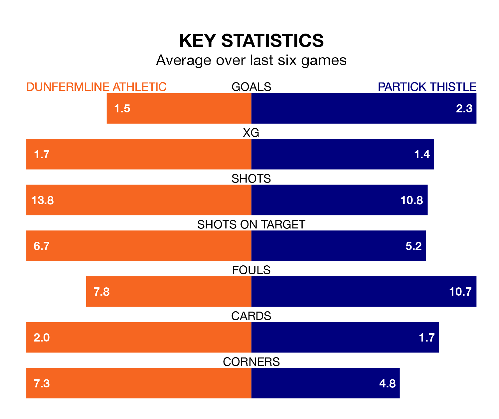

Partick Thistle travel to KDM Group East End Park for Saturday's match against Dunfermline Athletic looking to bounce back from defeat last time out in Scottish Championship.
Thistle, who sit third in the league after 15 games, fell to a 4-3 away defeat to Raith Rovers on December 8.
They face a Dunfermline side who picked up a win in their last match, a 2-1 victory against Airdrieonians, and who sit fourth in the table.
With 31 goals in 15 games so far this season, Partick Thistle are the league's second-highest scorers with 2.1 goals per game. But they are conceding more than average too, letting in 25 goals at a rate of 1.7 per game.
Dunfermline, meanwhile, are below average scorers, with 1.3 goals per game, compared to a league average of 1.5. They have conceded 1.1 goals per game.
In Brian Graham, Thistle have the league's sharpest shooter so far this season. He has notched eight goals in 14 appearances.
Athletic's top scorers, with four goals in 13 games each, are Craig Wighton and Lewis McCann.
In the last 10 years, Dunfermline and Partick Thistle have played each other on 15 occasions. Dunfermline won six of them, Partick Thistle five, and they drew four times.
On average, Dunfermline scored 1.6 goals and Thistle 1.2 in those matches.
Their last meeting was on September 30, when Partick Thistle won 3-0 at home.
The home side are in mixed form in Scottish Championship, with three wins and a draw from their last six games.
With three wins and two draws over that period, the visitors' form is slightly better – they have taken 11 points from 18, compared to Dunfermline's 10.
